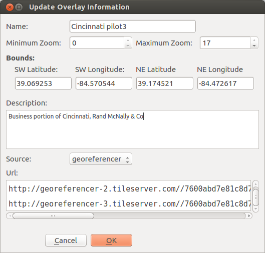

Now,
in the upper right hand of this screen, click on "Embed OGC WMTS
tiles". The next screen will be displayed with one or more rectangular
boxes. Click on the one titled "Polynomial". Next will be shown the
selected map displayed as an overlay on Google Maps. In the right hand
column of the screen is a list of Web viewers. The one titled "Google
Maps Api (KlokanTech) should be highlighted in gray. " Click on "Source
Code".
Now,
in the upper right hand of this screen, click on "Embed OGC WMTS
tiles". The next screen will be displayed with one or more rectangular
boxes. Click on the one titled "Polynomial". Next will be shown the
selected map displayed as an overlay on Google Maps. In the right hand
column of the screen is a list of Web viewers. The one titled "Google
Maps Api (KlokanTech) should be highlighted in gray. " Click on "Source
Code". 

var mapBounds = new google.maps.LatLngBounds(
new google.maps.LatLng(39.069253, -84.570544),
new google.maps.LatLng(39.174521, -84.472617));
return ["http://georeferencer-0.tileserver.com//7600abd7e81c8d7fbc5043849452e2770741fd01/map/szsnr7t8zSOvKiaLHZfKNS/201505301418-MmqGIv/polynomial/{z}/{x}/{y}.png","http://georeferencer-1.tileserver.com//7600abd7e81c8d7fbc5043849452e2770741fd01/map/szsnr7t8zSOvKiaLHZfKNS/201505301418-MmqGIv/polynomial/{z}/{x}/{y}.png","http://georeferencer-2.tileserver.com//7600abd7e81c8d7fbc5043849452e2770741fd01/map/szsnr7t8zSOvKiaLHZfKNS/201505301418-MmqGIv/polynomial/{z}/{x}/{y}.png","http://georeferencer-3.tileserver.com//7600abd7e81c8d7fbc5043849452e2770741fd01/map/szsnr7t8zSOvKiaLHZfKNS/201505301418-MmqGIv/polynomial/{z}/{x}/{y}.png"][(x+y)%4].replace('{z}',z).replace('{x}',x).replace('{y}',y); },